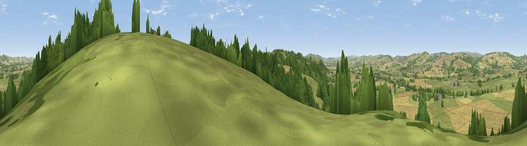

Viewpoint near Bouldon
#12580 in England · top 33% of its area beats it · near BouldonThe view, rendered

A 360° render of this exact spot computed from the terrain model, tree cover and land cover — summer colours, afternoon light, calibrated against photographs of famous viewpoints. Real trees, hedges and buildings will differ in detail.
The panorama
Grey silhouette: terrain skyline in each direction (720 bearings, Earth curvature and refraction included). Dashed green: skyline with trees (+15 m) and buildings (+8 m) as obstacles. Blue strip: how far the ground is visible on each bearing.
Where the view opens
Wedge length = distance to the farthest visible ground on that bearing (vegetation-aware). Rings at 10, 25 and 50 km.
What fills the view
44% grassland · 40% cropland · 16% woodland
Angular shares of the visible panorama (visual magnitude), not map area. Landscape diversity 0.45 (0–1 Shannon).
Key numbers
More beautiful places nearby
The staircase of upgrades: each row has a higher view potential than everything closer. Driving times are estimates from straight-line distance, calibrated against real road routing — check an actual route before setting out.
| Place | Direction | Drive | Score |
|---|---|---|---|
| Viewpoint near Bouldon | E · 1 km | ~2 min | 61.7 |
| Viewpoint near Stoke St Milborough | E · 3 km | ~7 min | 70.1 |
| Diddlebury Common | NW · 6 km | ~13 min | 74.5 |
| Clee Burf | ENE · 7 km | ~14 min | 79.0 |
| Viewpoint near Burwarton | ENE · 7 km | ~15 min | 83.4 |
| Titterstone Clee | SE · 8 km | ~16 min | 83.8 |
| The Lawley | NNW · 15 km | ~27 min | 85.8 |
| Viewpoint near Little Wenlock | NNE · 27 km | ~43 min | 86.6 |
52.43953, -2.69761 · source: screening · position refined by local search. Computed location — check access rights before visiting.